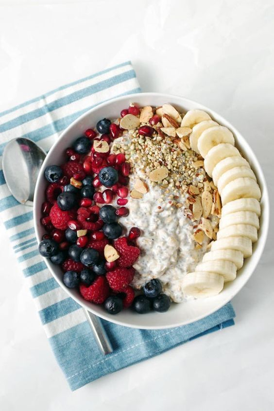
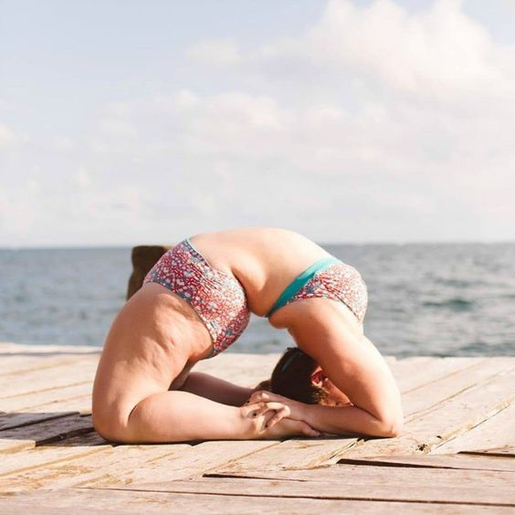
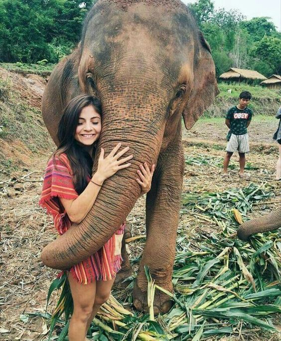

Find Your Way
The only way to find yourself
-
be yourself
1. If you don’t believe in yourself, who else will?
Honestly, if you don’t believe you’re going to succeed, then how on earth would anybody else do? Let’s say you want to build a successful business and you need to convince the investors that your idea is the one worth putting funds into. The first thing is to absolutely believe your concept is going to succeed, otherwise no one will trust in it. You won’t either. Imagine living a life without arms and legs. This is the reality of Nick Vujicic. Most people including himself doubted his ability to live a normal life. He even attempted suicide. The moment he found belief, however, was the turning point. Now, Nick lives a life without limitations, traveling the world and inspiring millions of people to believe in themselves, regardless of circumstances.
2. You build self-confidence
If you are not confident enough, you’ll break like a twig the first time you face an obstacle. Whatever you want to achieve, there will be countless barriers questioning your competences. The only way to get through them is by being confident enough that you can and will. This confidence comes from within, from the deep belief in yourself and your abilities.
3. You are one step closer to winning and succeeding
There’s that one goal you have in mind for a long time. You know what it takes to get there and you know the examples of people who did it successfully. Now that the path is clear, what you need is to believe that you can do it as well, and then take action. By creating that positive attitude, you realize that what separates you from accomplishing your goal is just the matter of time and work. This feeling of being closer to your target drastically increases your chances of hitting it.
4. You inspire yourself to take action
Once you literally see yourself arriving at the desired finish line, you are highly motivated to work toward your goal. You know it’s doable and within your reach, so you attempt until you finally get there. Michael Jordan failed countless times. As he admits, he missed thousands of shots and lost hundreds of games. However, he realized that’s part of the process so he used it as a driving force to work even harder. He also emphasizes it’s failure that enabled him huge success. Jordan’s attitude is something everyone should borrow. When you fail over and over again, be aware that you are just getting closer to a triumph.
5. You form positive attitude required to success.
Attitude is a little thing that makes a big difference.
Winston Churchill
Being negative and visioning the worst scenario is the easiest way to never achieve your goals. Due to self-belief, your attitude becomes the right one. There’s no way to convince a man with the wrong mindset that he can. Same goes for telling people with a positive attitude that they can’t. It’s like water off a duck’s back, they don’t hear the negative talk from the naysayers.
6. You realize failure is part of the process and temporary
Niklas Hed together with his mobile game development team created 51 games and all them were failures. This, however, enabled them to build Angry Birds, an app that dominated the app store and became a world wide phenomenon. Countless failures seemed to be the secret to succeeding. Some could think that creating 51 unsuccessful games means the failure is inescapable. But it turned out to be just temporary. Now, when you experience nothing but constant failure, don’t give up, maybe the next attempt is your pivotal moment.
7. You let the negative thoughts fade away
Once you replace negative thoughts with positive ones, you’ll start having positive results.
Willie Nelson
How many times did you tell yourself you can’t? I used to do it way too often. Finding an excuse that seems reasonable is incredibly easy, since our brains love to rationalize.
By feeding your brain with positive thinking and self-belief affirmations, you create no space for pessimistic thoughts. And even when they arrive from time to time, your confident attitude beats them instantly.
Healthy diet
Tips
- Base your meals on starchy carbohydrates
- Eat lots of fruit and veg
- Eat more fish – including a portion of oily fish
- Cut down on saturated fat and sugar
- Eat less salt
- Get active and be a healthy weight
- Don't get thirsty
- Don't skip breakfast
1. Base your meals on starchy carbohydrates
Starchy carbohydrates should make up just over one third of the food you eat. They include potatoes, bread, rice, pasta and cereals. Choose wholegrain varieties (or eat potatoes with their skins on) when you can: they contain more fibre, and can help you feel full for longer. Most of us should eat more starchy foods: try to include at least one starchy food with each main meal. Some people think starchy foods are fattening, but gram for gram the carbohydrate they contain provides fewer than half the calories of fat. Keep an eye on the fats you add when you're cooking or serving these types of foods because that's what increases the calorie content, for example oil on chips, butter on bread and creamy sauces on pasta.
Eat lots of fruit and veg
It's recommended that we eat at least five portions of a variety of fruit and veg every day. It's easier than it sounds. Why not chop a banana over your breakfast cereal, or swap your usual mid-morning snack for a piece of fresh fruit? Unsweetened 100% fruit juice, vegetable juice and smoothies can only ever count as a maximum of one portion of your 5 A DAY. For example, if you have two glasses of fruit juice and a smoothie in one day, that still only counts as one portion.
Eat more fish – including a portion of oily fish
Fish is a good source of protein and contains many vitamins and minerals. Aim to eat at least two portions of fish a week, including at least one portion of oily fish. Oily fish contains omega-3 fats, which may help to prevent heart disease.
| Oily fish include: | Non-oily fish include: |
|---|---|
| salmon | haddock |
| mackerel | plaice |
| trout | coley |
| herring | cod |
| sardines | tuna |
If you regularly eat a lot of fish, try to choose as wide a variety as possible. You can choose from fresh, frozen and canned: but remember that canned and smoked fish can be high in salt.
Cut down on saturated fat and sugar
Saturated fat in our diet
We all need some fat in our diet, but it's important to pay attention to the amount and type of fat we're eating. There are two main types of fat: saturated and unsaturated. Too much saturated fat can increase the amount of cholesterol in the blood, which increases your risk of developing heart disease.
The average man should have no more than 30g saturated fat a day. The average woman should have no more than 20g saturated fat a day, and children should have less than adults.
Saturated fat is found in many foods, such as:
- hard cheese
- cakes
- biscuits
- sausages
- cream
- butter
- lard
- pies
Try to cut down on your saturated fat intake, and choose foods that contain unsaturated fats instead, such as vegetable oils, oily fish and avocados. For a healthier choice, use just a small amount of vegetable oil or reduced-fat spread instead of butter, lard or ghee. When you're having meat, choose lean cuts and cut off any visible fat. Sugar in our diet Regularly consuming foods and drinks high in sugar increases your risk of obesity and tooth decay. Sugary foods and drinks, including alcoholic drinks, are often high in energy (measured in kilojoules or calories), and if eaten too often, can contribute to weight gain. They can also cause tooth decay, especially if eaten between meals. Many packaged foods and drinks contain surprisingly high amounts of free sugars. Free sugars are any sugars added to foods or drinks, or found naturally in honey, syrups and unsweetened fruit juices. Cut down on:
- sugary fizzy drinks
- alcoholic drinks
- sugary breakfast cereals
- cakes
- biscuits
- pastries
These foods contain added sugars: this is the kind of sugar we should be cutting down on, rather than sugars that are found in things such as fruit and milk. Food labels can help: use them to check how much sugar foods contain. More than 22.5g of total sugars per 100g means that the food is high in sugar, while 5g of total sugars or less per 100g means that the food is low in sugar. Get tips on cutting down sugar in your diet.
Eat less salt
– no more than 6g a day for adults Eating too much salt can raise your blood pressure. People with high blood pressure are more likely to develop heart disease or have a stroke. Even if you don’t add salt to your food, you may still be eating too much. About three-quarters of the salt we eat is already in the food we buy, such as breakfast cereals, soups, breads and sauces. Use food labels to help you cut down. More than 1.5g of salt per 100g means the food is high in salt. Adults and children over 11 should eat no more than 6g of salt (about a teaspoonful) a day. Younger children should have even less. Get tips on cutting down on salt in your diet.
Get active and be a healthy weight
Eating a healthy, balanced diet plays an essential role in maintaining a healthy weight, which is an important part of overall good health. Being overweight or obese can lead to health conditions such as type 2 diabetes, certain cancers, heart disease and stroke. Being underweight could also affect your health. Check whether you're a healthy weight by using our Healthy weight calculator. Most adults need to lose weight, and need to eat fewer calories to do this. If you're trying to lose weight, aim to eat less and be more active. Eating a healthy, balanced diet will help: aim to cut down on foods that are high in saturated fat and sugar, and eat plenty of fruit and vegetables. Don't forget that alcohol is also high in calories, so cutting down can help you to control your weight. Physical activity can help you to maintain weight loss or be a healthy weight. Being active doesn't have to mean hours at the gym: you can find ways to fit more activity into your daily life. For example, try getting off the bus one stop early on the way home from work, and walking. Being physically active may help reduce the risk of heart disease, stroke and type 2 diabetes. For more ideas, see Get active your way. After getting active, remember not to reward yourself with a treat that is high in energy. If you feel hungry after activity, choose foods or drinks that are lower in calories, but still filling. If you're underweight, see our page on underweight adults. If you're worried about your weight, ask your GP or a dietitian for advice.
Don't get thirsty
We need to drink plenty of fluids to stop us getting dehydrated – the government recommends 6-8 glasses every day. This is in addition to the fluid we get from the food we eat. All non-alcoholic drinks count, but water and lower-fat milk are healthier choices. Try to avoid sugary soft and fizzy drinks that are high in added sugars and calories, and are also bad for teeth. Even unsweetened fruit juice and smoothies are high in free sugar. Your combined total of drinks from fruit juice, vegetable juice and smoothies should not be more than 150ml a day – which is a small glass. For example, if you have 150ml of orange juice and 150ml smoothie in one day, you'll have exceeded the recommendation by 150ml. When the weather is warm, or when we get active, we may need more fluids.
Don't skip breakfast
Some people skip breakfast because they think it will help them lose weight. In fact, research shows that people who regularly eat breakfast are less likely to be overweight. Breakfast has also been shown to have positive effects on children’s mental performance and increase their concentration throughout the morning. A healthy breakfast is an important part of a balanced diet, and provides some of the vitamins and minerals we need for good health. A wholegrain, lower-sugar cereal with fruit sliced over the top is a tasty and nutritious breakfast.
Travel More

Click to Explore more
The gladdest moment in human life, me thinks, is a departure into unknown lands.
– Sir Richard Burton-
Be fearless in the pursuit of what sets your soul on fire.
– Jennifer Lee -
Travel makes one modest. You see what a tiny place you occupy in the world.
-Gustav Flaubert
Always be positive.
P o s i t i v e
g a l l e r y
Fake it till you make it
Your happiness is in your hands
It's never too late to start living
Love yourself
Imagine person you would do everything for. Now make that person YOU